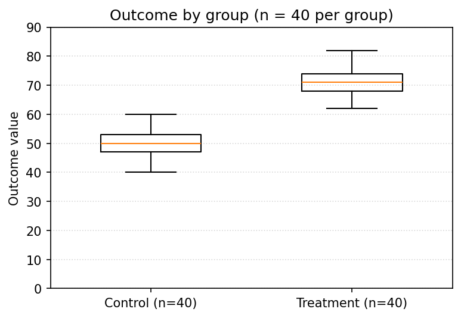
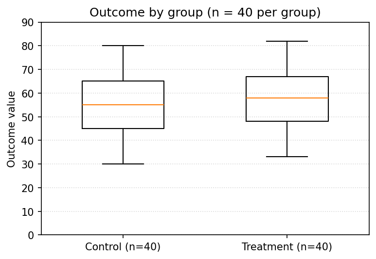
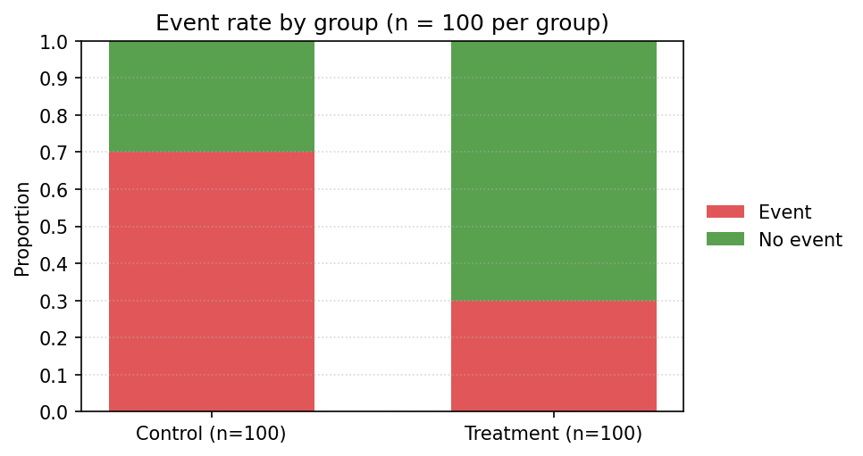
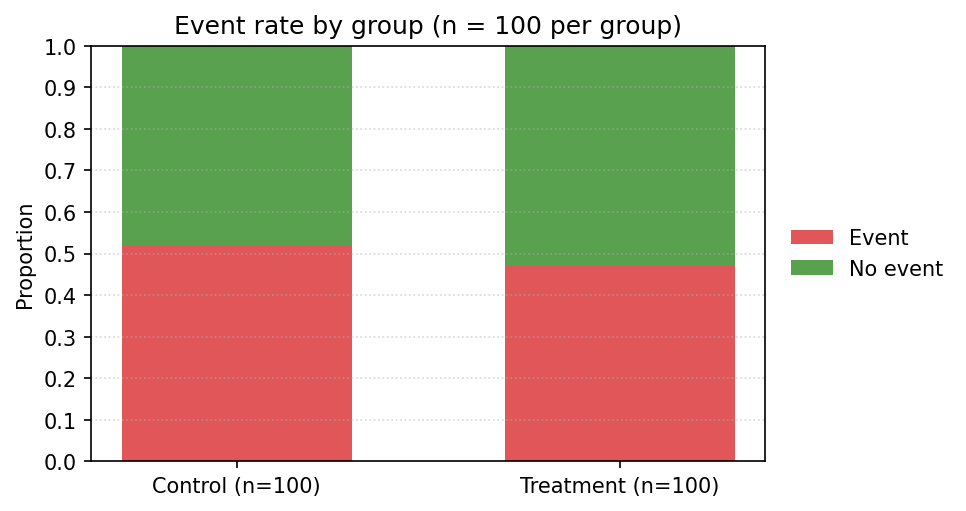
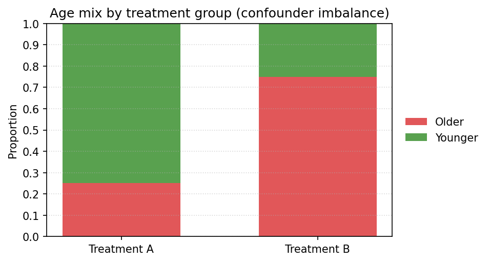
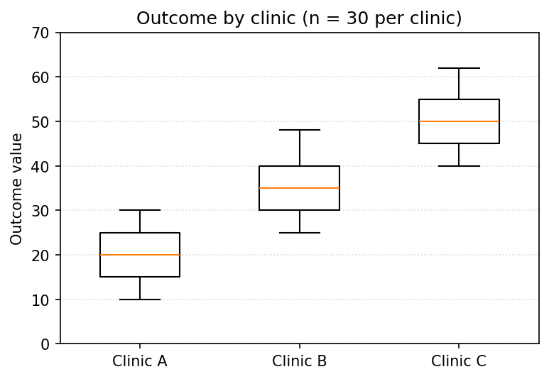

Module 4 — Synthesis Quiz
Practice bank, matches the Canvas quiz, open notes
Module 4, Synthesis Quiz
Readings: Module 4 Read 1. Labs: Demo 1 and Demo 2. Project: Project 4.
These practice questions match the autograded Canvas Synthesis quiz. Each question is self-contained. They integrate study design and its consequence (causal versus association), explanatory and response variables, the parameter of interest (difference in means versus proportions), choosing and reading the right test and confidence interval, R code, error types, simulation, and reading graphs to judge whether a difference looks like chance.
1. Interpret a mean-difference CI
An RCT reports a 95 percent CI for the mean sleep change (treatment minus control) of 0.4 to 1.8 hours. Which is the best interpretation?
- A. We are 95 percent confident the true mean increase for treatment versus control is between 0.4 and 1.8 hours (repeated-sampling meaning).
- B. 95 percent of individuals sleep 0.4 to 1.8 hours more in the treatment group.
- C. The treatment is proven effective because the interval is positive.
- D. There is a 95 percent probability the true difference lies in this exact interval now that data are collected.
2. Interpret a proportion-difference CI
A study reports a 95 percent CI for the difference in recovery proportions (new minus standard) of 0.05 to 0.22. Which is the best interpretation?
- A. The two treatments are identical because the interval is narrow.
- B. We are 95 percent confident the new treatment’s recovery rate exceeds the standard by 5 to 22 percentage points in the population.
- C. The true difference is exactly the midpoint of the interval.
- D. 95 percent of patients recover 5 to 22 percent more often with the new treatment.
3. Zero inside a CI
A study reports a 95 percent CI for the mean score difference (tutoring minus control) of -2.1 to 8.4. What does zero being inside the interval tell you?
- A. The tutoring program definitely does not work.
- B. Zero is a plausible value, so you cannot conclude a nonzero population difference at the 95 percent level.
- C. The two groups definitely have equal means.
- D. You should reject the null because the interval is wide.
4. Best CI interpretation
Which statement is the best interpretation of a 95 percent confidence interval for a mean difference?
- A. There is a 95 percent probability the true difference is in this one interval.
- B. The interval contains 95 percent of the data.
- C. If we repeated the study many times, about 95 percent of the intervals we build would contain the true difference.
- D. 95 percent of individuals differ by an amount in this interval.
5. Causal conclusion from an RCT
An RCT randomly assigns 120 volunteers to a low-carb or low-fat diet; the low-carb group loses significantly more weight (p = 0.01). Which conclusion is valid?
- A. No conclusion: p = 0.01 is not significant at the 0.001 level.
- B. Causal only if n exceeds 200.
- C. Causal: random assignment supports that the low-carb diet caused greater average weight loss.
- D. Association only: random assignment does not support causation.
6. Association-only conclusion
An observational survey finds employees who use standing desks report 15 percent higher productivity (p = 0.04). Which conclusion is valid?
- A. Causal: p below 0.05 proves the standing desk caused the improvement.
- B. No conclusion: observational studies cannot give significant p-values.
- C. Causal because the study measured productivity directly.
- D. Association only: standing-desk users tend to be more productive, but unmeasured confounders could explain the gap.
7. Causal-overreach headline
A headline says coffee causes longer life, citing an observational study of 50,000 adults. What is the core problem with the claim?
- A. The sample is too large to be representative.
- B. Causal claims are fine once n exceeds 10,000.
- C. Observational design cannot establish causation; coffee drinkers may differ in diet, income, or other unmeasured ways.
- D. There is no problem; correlation is causation.
8. When an RCT is impossible
For which question is a randomized controlled trial impossible or unethical, forcing an observational design?
- A. Whether long-term smoking causes lung cancer, since you cannot ethically assign people to smoke for years.
- B. Which of two approved headache drugs lowers pain more.
- C. Whether a study app improves quiz scores in a course.
- D. Whether a blue or green button gets more website clicks.
9. Design plus consequence plus confounder
A company finds employees who attended an optional leadership seminar were later promoted more often. Attendance was voluntary. What is the design, the strongest valid conclusion, and a plausible confounder?
- A. RCT; association only; the seminar was randomized.
- B. Observational; association only; ambition or prior performance could drive both seminar attendance and promotion.
- C. RCT; causal; there is no possible confounder.
- D. Observational; causal, because promotion came after the seminar.
10. EV, RV, parameter: numerical
A trial compares mean daily steps between a group given a fitness tracker and a control group. Identify the EV, RV, and parameter of interest.
- A. EV: tracker group; RV: daily steps; parameter: p₁ - p₂.
- B. EV: tracker group (tracker vs control); RV: daily steps (numerical); parameter: mu₁ - mu₂.
- C. EV and RV are both daily steps; no parameter.
- D. EV: daily steps; RV: tracker group; parameter: p₁ - p₂.
11. EV, RV, parameter: binary
A trial compares whether each patient is readmitted within 30 days (yes or no) between a new discharge plan and the standard plan. Identify the EV, RV, and parameter of interest.
- A. EV: plan; RV: readmitted yes/no; parameter: mu₁ - mu₂.
- B. EV: patient ID; RV: plan; parameter: a correlation.
- C. EV: plan (new vs standard); RV: readmitted yes/no (binary); parameter: p₁ - p₂.
- D. EV: readmitted yes/no; RV: plan; parameter: mu₁ - mu₂.
12. Means or proportions?
You must decide whether the main parameter is a difference in means or a difference in proportions. What determines the choice?
- A. The sample size in each group.
- B. The number of groups being compared.
- C. Whether the study is an RCT or observational.
- D. The type of the response variable: numerical gives a difference in means, binary gives a difference in proportions.
13. Observational unit and variable type
A dataset has one row per patient with columns treatment (A or B) and recovered (yes or no). What is the observational unit, and what type is the recovered variable?
- A. Unit: one treatment group; recovered is numerical.
- B. Unit: the whole dataset; recovered is continuous.
- C. Unit: one column; recovered is an explanatory variable.
- D. Unit: one patient; recovered is a binary categorical variable.
14. Match the method: numerical, two groups
Two independent groups are compared on a numerical outcome. Name the test and one condition from the methods map.
- A. McNemar’s test; condition: paired binary data.
- B. Welch two-sample t-test; condition: independent observations (or random assignment) and each group large or roughly normal.
- C. One-way ANOVA; condition: three or more groups.
- D. Chi-square test; condition: expected counts at least 5.
15. Match the method: binary, two groups
Two independent groups are compared on a binary outcome. Name the test and one condition from the methods map.
- A. Paired t-test; condition: matched pairs.
- B. One-way ANOVA; condition: similar spreads.
- C. Two-proportion test or chi-square test; condition: independent observations and all expected counts at least 5.
- D. Welch t-test; condition: roughly normal groups.
16. Match the method: paired numerical
The same 20 patients have cholesterol measured before and after a diet (each patient measured twice). Name the test and the parameter.
- A. Paired t-test; parameter is the mean within-patient difference (before minus after).
- B. Welch two-sample t-test; parameter is a difference in two independent means.
- C. Two-proportion test; parameter is a difference in proportions.
- D. Chi-square test; parameter is an association.
17. Match the method: paired binary
The same 60 patients are classified as in pain or not before and after a procedure (each patient classified twice). Name the test.
- A. Two-proportion test on the two pain counts.
- B. One-way ANOVA.
- C. Welch two-sample t-test.
- D. McNemar’s test, because the two yes/no classifications are paired (same patients).
18. Match the method: 3+ groups, numerical
You compare mean recovery time across four hospitals (a numerical outcome, four groups). Name the test and the R code.
- A. McNemar’s test:
mcnemar.test(tab). - B. Welch two-sample t-test:
t.test(time ~ hospital). - C. One-way ANOVA:
fit <- lm(time ~ hospital); anova(fit). - D. Two-proportion test:
prop.test(…).
19. Match the method: 3+ groups, binary
You compare recovery (yes or no) across three clinics (binary outcome, three groups). Name the test and the R code.
- A. One-sample t-test on recovery.
- B. Paired t-test across clinics.
- C. Chi-square test of independence:
chisq.test(table(clinic, recovered)). - D. One-way ANOVA:
lm(recovered ~ clinic); anova(fit).
20. Conditions for one-way ANOVA
Which conditions does the methods map list for one-way ANOVA?
- A. All expected counts at least 5.
- B. Exactly two groups.
- C. The data are paired before and after.
- D. Independent observations, roughly normal within groups, and similar spread across groups.
21. R: group summaries
Which tidyverse pipeline computes the mean and SD of outcome for each level of group in df?
- A.
df |> select(group, outcome) |> count() - B.
df |> filter(group) |> mutate(mean = mean(outcome)) - C.
df |> group_by(group) |> summarize(mean = mean(outcome), sd = sd(outcome)) - D.
df |> summarize(group) |> mean(outcome)
22. R: boxplot by group
Which ggplot2 call makes a boxplot of numerical outcome by group?
- A.
ggplot(df, aes(x = outcome)) + geom_histogram() - B.
ggplot(df, aes(x = group, y = outcome)) + geom_boxplot() - C.
ggplot(df, aes(x = group, y = outcome)) + geom_point() - D.
ggplot(df, aes(x = group, fill = outcome)) + geom_bar()
23. R: 100 percent stacked bar
Which ggplot2 call makes a 100 percent stacked bar comparing a binary outcome across group?
- A.
ggplot(df, aes(x = outcome, y = group)) + geom_col() - B.
ggplot(df, aes(x = group, fill = outcome)) + geom_bar(position = ‘fill’) - C.
ggplot(df, aes(x = group, fill = outcome)) + geom_bar() - D.
ggplot(df, aes(x = group, y = outcome)) + geom_boxplot()
24. R: two-sample t-test
Which call runs a Welch two-sample t-test of outcome by group in df?
- A.
t.test(dfoutcome, dfgroup) - B.
t.test(group ~ outcome, data = df) - C.
t.test(outcome ~ group, data = df) - D.
t.test(outcome, paired = TRUE)
25. R: two-proportion test
Group A has 30 events out of 80; group B has 45 events out of 90. Which prop.test call compares the two event proportions?
- A.
prop.test(30/80, 45/90) - B.
prop.test(c(30, 45), c(80, 90)) - C.
prop.test(c(80, 90), c(30, 45)) - D.
prop.test(x = 30, n = 80)
26. R: one-way ANOVA
Which code gives the overall ANOVA p-value for a numerical outcome across group (3+ groups)?
- A.
lm(outcome ~ group, data = df) - B.
t.test(outcome ~ group, data = df) - C.
fit <- lm(outcome ~ group, data = df); anova(fit) - D.
prop.test(table(dfgroup, dfoutcome))
27. R: chi-square test across groups
Which code tests whether a binary recovered outcome is associated with clinic (3 groups)?
- A.
chisq.test(df$recovered, p = c(0.5, 0.5)) - B.
t.test(recovered ~ clinic, data = df) - C.
prop.test(recovered, clinic) - D.
chisq.test(table(dfclinic, dfrecovered))
28. Type I and II: drug trial
You test whether a new drug reduces symptoms more than placebo (Hₐ: mudrug < muₚlacebo). Which pair correctly describes Type I and Type II errors?
- A. Type I: fail to detect a working drug. Type II: conclude the drug is better when it is not.
- B. Type I: sample too small. Type II: p-value too large.
- C. Type I: conclude the drug is better when it is not. Type II: fail to detect that the drug really works.
- D. Type I and Type II are the same error.
29. Type I and II: training program
You test whether a training program raises pass rates (Hₐ: ptrained > pcontrol). Which descriptions are correct?
- A. No error types apply to proportion tests.
- B. Type I: miss a helpful program. Type II: claim training helps when it does not.
- C. Type I: conclude training helps when it does not. Type II: miss a program that truly helps.
- D. Type I: p exceeds alpha. Type II: sample too small.
30. Decision and error: fail to reject
A Welch t-test gives p = 0.08 at α = 0.05. What is the decision, and which error could you be making?
- A. Reject H₀; a Type II error is possible.
- B. Reject H₀; a Type I error is possible.
- C. Fail to reject H₀; a Type I error is possible.
- D. Fail to reject H₀; a Type II error is possible (you might be missing a real difference).
31. Decision and error: reject
A two-proportion test gives p = 0.003 at α = 0.05. What is the decision, and which error could you be making?
- A. Fail to reject H₀; a Type II error is possible.
- B. Fail to reject H₀; no error is possible.
- C. Reject H₀; a Type I error is possible (you might be claiming a difference that is not real).
- D. Reject H₀; a Type II error is possible.
32. Simulate a numerical comparison
You want to simulate a two-group numerical comparison with n₁ = n₂ = 30, true means mu₁ = 10 and mu₂ = 12, then test it. Which plan fits?
- A. Generate with
rpois(30, 10); test withchisq.test(). - B. No simulation is needed; use the true means directly.
- C. Generate with
rbinom(30, 1, 0.4); test withprop.test(). - D. Generate with
rnorm(30, 10)andrnorm(30, 12); test witht.test(y ~ group).
33. Simulate a binary comparison
You want to simulate a two-group binary comparison with n₁ = n₂ = 50, true proportions p₁ = 0.4 and p₂ = 0.6, then test it. Which plan fits?
- A. Generate with
rbinom(50, 1, 0.4)andrbinom(50, 1, 0.6); test withprop.test(c(x1, x2), c(50, 50)). - B. Generate with
runif(50); test with a one-sample t-test. - C. Generate with
rnorm(50, 0.4); test with a t-test. - D. Generate with
rpois(50, 0.4); test with chi-square.
34. Validate a test by simulation
To check a test under the null (no true difference), you simulate many datasets and record the p-values. If the test is well-calibrated, about 5 percent of the p-values should fall below 0.05 and the p-values should be roughly uniform on 0 to 1.
- A. True
- B. False
35. Graph + test: numerical clear

The boxplots compare a numerical outcome between two independent groups of 40. Which test fits, and does the difference look like chance?
- A. McNemar’s test; the groups are paired.
- B. Chi-square test; the difference is clearly chance.
- C. Welch two-sample t-test; the boxes barely overlap, so the difference is unlikely to be chance (expect a small p-value).
- D. No test is possible from a boxplot.
36. Graph + test: numerical overlap

The boxplots compare a numerical outcome between two independent groups of 40. Which test fits, and does the difference look like chance?
- A. Welch two-sample t-test; the boxes overlap heavily with similar medians, so the difference is consistent with chance (expect a large p-value).
- B. No test applies to overlapping boxes.
- C. Welch t-test; the treatment clearly works.
- D. Two-proportion test; the response variable is binary.
37. Graph + test: binary clear

The 100 percent stacked bars compare a binary outcome between two independent groups of 100 (event rates about 0.70 and 0.30). Which test fits, and does the difference look like chance?
- A. Two-proportion test (or chi-square); a 40-point gap with 100 per group is unlikely to be chance.
- B. No test applies to stacked bars.
- C. Welch t-test; the response variable is numerical.
- D. Paired t-test; the groups are matched.
38. Graph + test: binary similar

The 100 percent stacked bars compare a binary outcome between two independent groups of 100 (event rates about 0.52 and 0.47). Which test fits, and does the difference look like chance?
- A. Two-proportion test (or chi-square); the 5-point gap is easily consistent with chance (expect a large p-value).
- B. Two-proportion test; the treatment clearly works.
- C. No test applies here.
- D. Welch t-test; the response variable is numerical.
39. Graph: confounder imbalance

In an observational study, this 100 percent stacked bar shows the age mix differs sharply between Treatment A and Treatment B groups (mostly younger in A, mostly older in B). Why does this threaten a crude comparison of outcomes between A and B?
- A. Age is a confounder: it differs across the groups (arrow to group) and likely affects the outcome (arrow to outcome), so a crude difference mixes treatment and age.
- B. It does not matter; only sample size affects fairness.
- C. It means the response variable must be numerical.
- D. It guarantees the treatment has no effect.
40. Graph + test: three groups

The boxplots compare a numerical outcome across three clinics (30 per clinic). Which test compares all three group means at once?
- A. One-way ANOVA:
lm(outcome ~ clinic)thenanova(fit). - B. A separate Welch t-test for every pair of clinics with no adjustment.
- C. McNemar’s test.
- D. A two-proportion test.
Click to reveal the answer key
- Correct answer: A. A CI is a range of plausible values for the population mean difference, with the repeated-sampling meaning.
- Correct answer: B. The CI gives plausible values for the population difference in proportions.
- Correct answer: B. If 0 is inside the CI, no difference is plausible, so you fail to reject the null.
- Correct answer: C. Confidence refers to the long-run capture rate of the procedure across repeated samples.
- Correct answer: C. Random assignment removes confounding, so a significant RCT result supports causation.
- Correct answer: D. Observational data support association; a small p-value does not remove confounding.
- Correct answer: C. Without random assignment, unmeasured confounders can drive the association, so causation is not supported.
- Correct answer: A. You cannot ethically randomize people to smoke, so smoking-and-cancer studies are observational.
- Correct answer: B. Voluntary attendance makes this observational; ambition or prior performance is a plausible confounder.
- Correct answer: B. Group is the EV, steps (numerical) is the RV, and the parameter is a difference in means.
- Correct answer: C. Plan is the EV, readmission (binary) is the RV, so the parameter is a difference in proportions.
- Correct answer: D. The response variable type decides the parameter: means for numerical, proportions for binary.
- Correct answer: D. Each row is one patient (the unit); recovered yes/no is a binary categorical variable.
- Correct answer: B. Numerical outcome, two independent groups uses the two-sample t-test with independence and approximate normality.
- Correct answer: C. Binary outcome, two groups uses prop.test/chisq.test with the expected-count condition.
- Correct answer: A. Same patients twice is paired, so use the paired t-test on the differences.
- Correct answer: D. Paired binary outcomes (same patients twice) use McNemar’s test.
- Correct answer: C. A numerical outcome across 3+ groups uses one-way ANOVA via lm() then anova().
- Correct answer: C. A categorical outcome across 3+ groups uses the chi-square test of independence on the clinic-by-recovery table.
- Correct answer: D. ANOVA needs independence, approximate within-group normality, and similar spreads.
- Correct answer: C. group_by then summarize computes per-group statistics.
- Correct answer: B. geom_boxplot with group on x and the numerical outcome on y compares groups.
- Correct answer: B. position = ‘fill’ rescales each group’s bar to proportions for comparison.
- Correct answer: C. The formula outcome ~ group with data = df runs the two-sample t-test.
- Correct answer: B. prop.test takes the event counts first, then the group totals.
- Correct answer: C. Fit with lm() then read the overall test with anova(fit).
- Correct answer: D. A categorical outcome across groups is a test of independence: build the clinic-by-recovered table and pass it to chisq.test.
- Correct answer: C. Type I is a false positive (claim an effect that is not there); Type II is a false negative (miss a real effect).
- Correct answer: C. Type I claims a benefit that is not real; Type II misses a real benefit.
- Correct answer: D. p above alpha means fail to reject, and the risk is a Type II error (a false negative).
- Correct answer: C. p below alpha means reject, and the risk is a Type I error (a false positive).
- Correct answer: D. A numerical outcome is simulated with rnorm and compared with a two-sample t-test.
- Correct answer: A. A binary outcome is simulated with rbinom and compared with prop.test.
- Correct answer: A (True). Correct. Under a true null, p-values are uniform, so the rejection rate matches alpha (about 5 percent).
- Correct answer: C. Numerical outcome, two groups uses a t-test; clear separation points away from chance.
- Correct answer: A. The test is a t-test; heavy overlap and similar medians are consistent with chance.
- Correct answer: A. A binary outcome uses prop.test/chisq.test; a large rate gap points away from chance.
- Correct answer: A. A binary outcome uses prop.test/chisq.test; a tiny rate gap is consistent with chance.
- Correct answer: A. Unequal age mix is exactly confounding: age points to both the group and the outcome, biasing the crude comparison.
- Correct answer: A. Three or more group means at once call for one-way ANOVA.